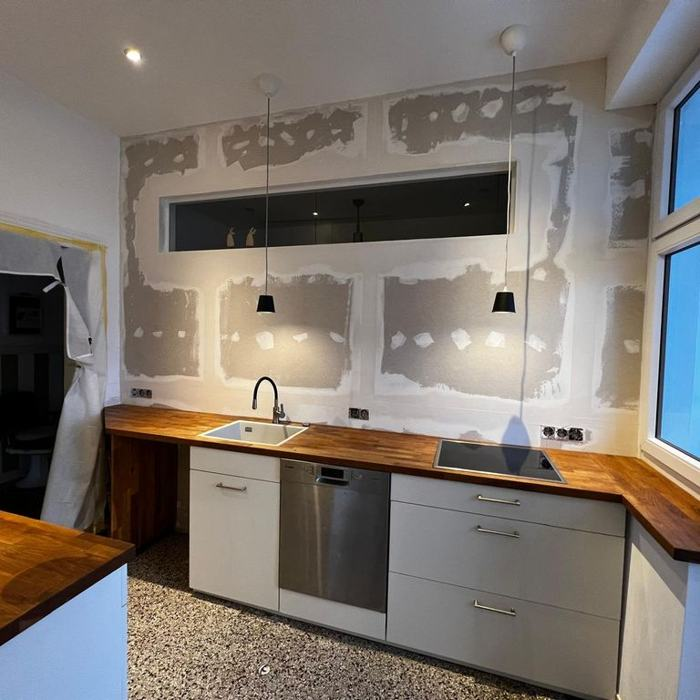
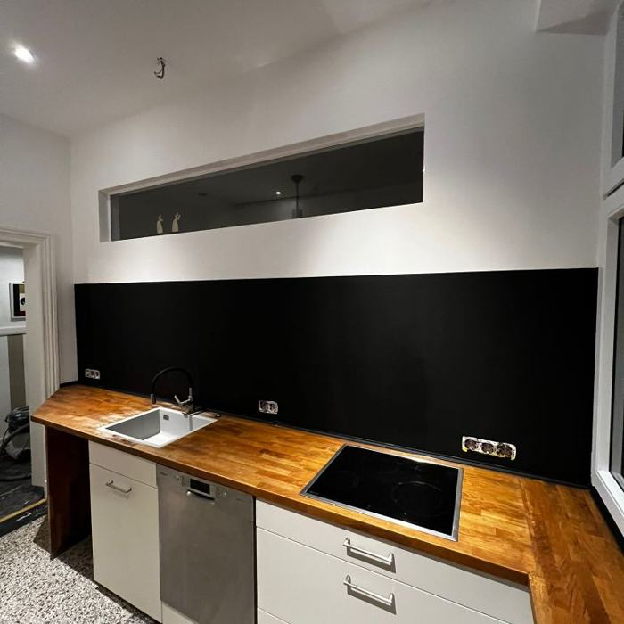
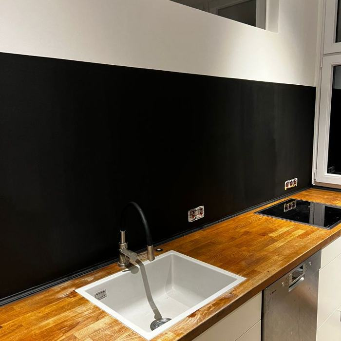
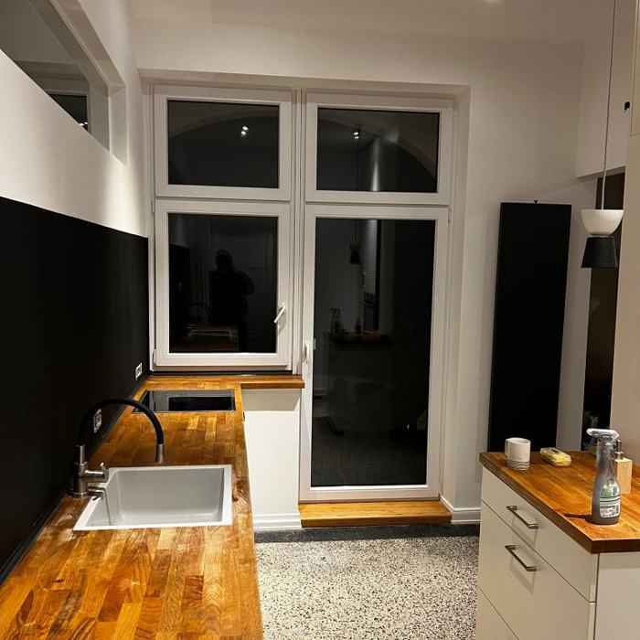

Eine Küche, die erst mal keine war
Die Wand war offen, die Leitungen lagen frei. Wir haben verputzt, die Wand hinter der Arbeitsplatte dunkel gestrichen, die Holzplatte eingepasst und die Küche montiert.

Am Anfang
Arbeitsplatte drin
Wand gestrichen- Fertig

Andere Seite